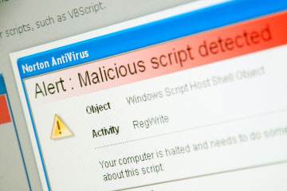

What are the Types of Viruses?
Viruses that can be spread through normal computer activities include:
- Viruses: A small piece of software that piggybacks on real programs to infect a computer. For example, a virus might attach itself to a program such as a spreadsheet program. Each time the spreadsheet program runs, the virus runs, too, and it has the chance to reproduce (by attaching to other programs) or cause issues on the computer.
- E-mail viruses: An e-mail virus travels as an attachment to e-mail messages, and usually replicates itself by automatically mailing itself to dozens of people in the victim's e-mail address book. Some e-mail viruses don't even require a double-click and may launch when you view the infected message in a preview of your e-mail
- Trojan horses: A computer program that claims to do one thing (like a game) but instead is a malicious program that does damage when you run it, such as erasing your hard disk. Trojan horses have no way to replicate automatically.
- Worms: A small piece of software that uses computer networks and security holes to replicate itself. A copy of the worm scans the network for another machine that has a specific security hole. It copies itself to the new machine using the security hole, and then starts replicating from there.